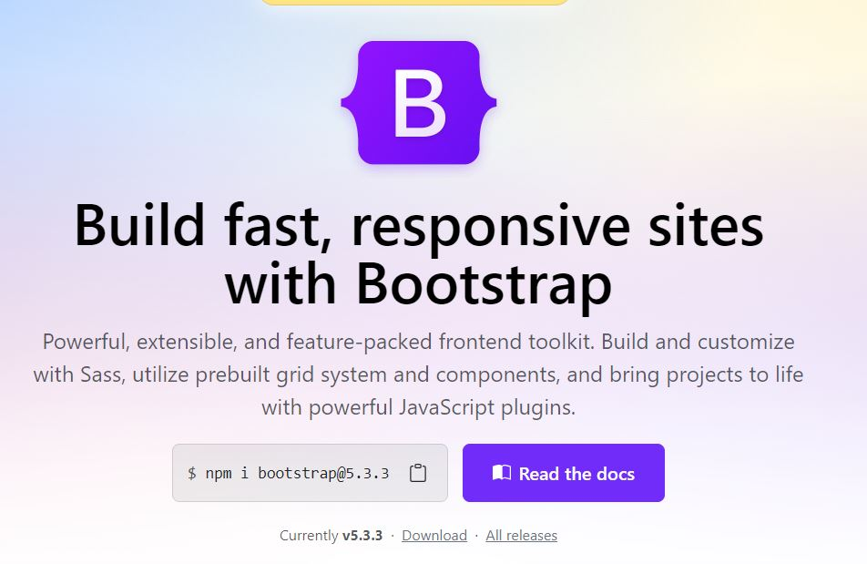
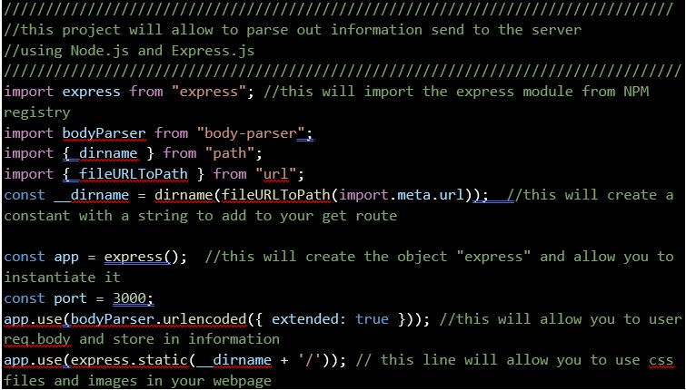
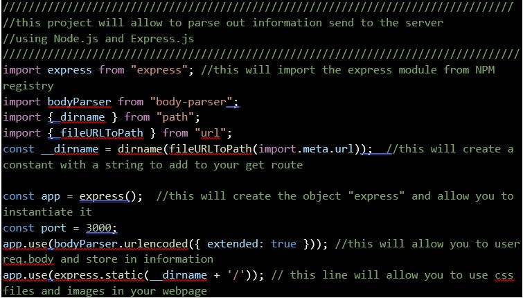
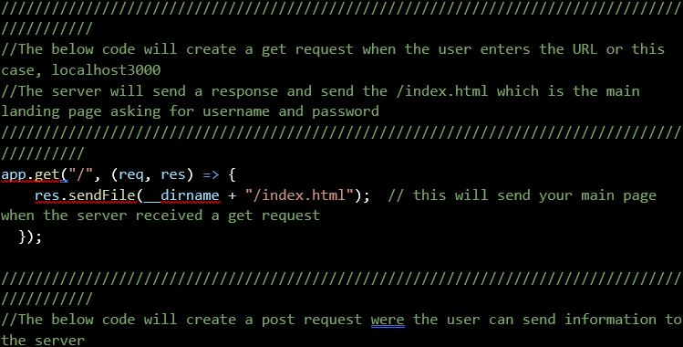
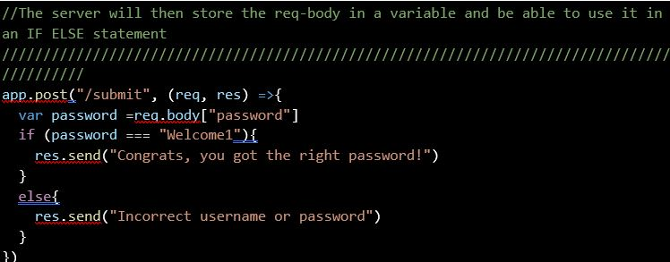
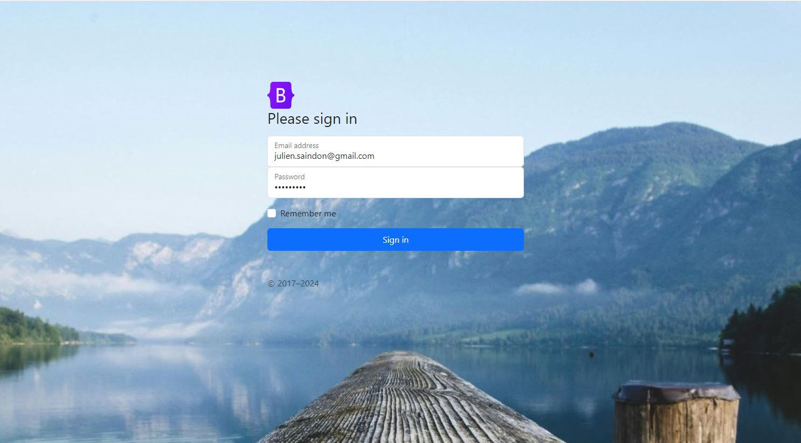
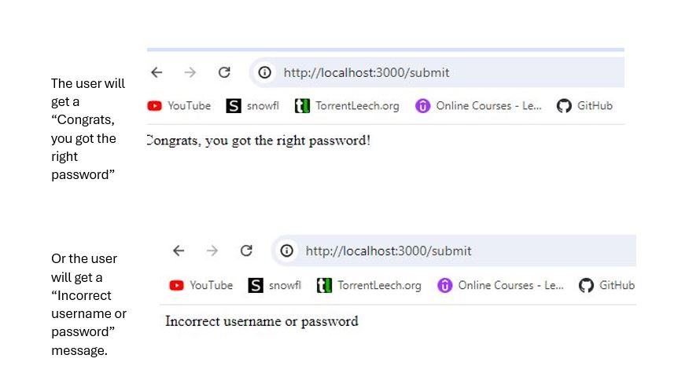

How can I extract out information from an HTML login using JavaScript
This will be shown using Node.js and Express
 Here’s what you’ll see:
Here’s what you’ll see:
- A general overview and explanation of what is Node.js and Express.
- How to create an HTML login form using Bootstrap.
- How to get started with Node.js and Express.
- What the code means.
- Conclusion.
In this post, I will show you how to use JavaScript (with the help of Node.js) to apply backend development to extract login information to check if the right password is right or not. This post assumes you know how to create an HTML and CSS file and having working knowledge about JavaScript.
1 .A general overview and explanation of what is Node.js and Express.
NODE.JS
The technical explanation for Node.js: As an asynchronous event-driven JavaScript runtime. Which doesn’t mean much if you are just starting out learning this but let’s break it down and see what it means.What is a runtime environment?
A runtime environment is software that allows a programming language to be complied on and understood by the machine.
In the past, the only runtime environment was in the browser (because JavaScript was limited to frontend development). Fast forward to now, Node.js is another type of runtime environment that allows us to use JavaScript anywhere.
Basically, Node.js allows JavaScript to be used not just on the browser (i.e. on a server, in a browser, as a standalone machine . You can use JavaScript on the backend and the front end.
What does Asynchronous means?
To understand what Asynchronous means, let’s go over what synchronous means. Asynchronous means the program or application is run line by line and cannot perform the next line without waiting for the previous process to finish. Asynchronous means that I can be event driven and free up resources, while other code is being processed. So, what is NPM? NPM which stands for Node Package Manager, works with Node.js and is a place to find code for different backend uses. For example, we will use NPM to look for our code to parse out information from out login form.
EXPRESS
So, what’s Express? Express is a framework for node.JS. A framework is simply frequently used, pre-built blocks of code that can be used. For CSS, a common framework is Bootstrap. Therefore, when you are using the Node.js runtime environment you can use the Express framework. Express is frequently used for web applications, making APIs and Middleware.2. How to create an HTML login form using Bootstrap.
Create an HTML login form using Bootstrap or whichever framework you prefer.Open your favorite IDE and load your project folder and create your best-looking login form with HTML and CSS. In my case, I’m using bootstrap as a framework (remember Express is a framework also). Basically, you can go to Bootstrap and copy paste their code so you can use parts of it. But it’s not that simple, because you will want to modify it so you must understand how bootstrap is linked to your page and how to make changes, otherwise your hands are tied. 
3. How to get started with Node.js and Express.
Here are both the links for Node.js and Express: Express Node.js
These links will provide a "get started" guide to help you install what you need.
Project outlines (What the code means).
- Create project folder with project.html and project.js
- Initialize node.js
- Explanation of the code.
- Results
- Step a: Create project folder with project.html and project.js in IDE.
Using the terminal or the GUI create a project folder and add an HTML file with your login page, create JavaScript file with the extension “.js”.
- Step b: Initializing Node.js
By using node.js and Express you must create a server (either on your local host or an external server). Start by opening your favorite IDE and opening your JavaScript file. To use Express, you must first create a JSON file that will load your object file and store your settings. Open BASH and type: npm init. (see below) Using node, you can now start your server by enter this in the terminal: "node example.js"
This will initiate a server on your local machine.
Using node, you can now start your server by enter this in the terminal: "node example.js"
This will initiate a server on your local machine.
Go your browser and enter this in the URL: localhost: "whatever port you choose". Once your server is active you should see the below:
- step c. Explanation of the code.
After creating your JSON type: npm install body-parser and npm install express. After this you JSON will be updated, here is what mine looks like: Below is the header of the JavaScript file:

Below is the header of the JavaScript file:

Below is the code for the GET and POST requests that are sent and received. 
 - Step b: Initializing Node.js
Based on the above code, the user must input “Welcome1” into the password field. 
